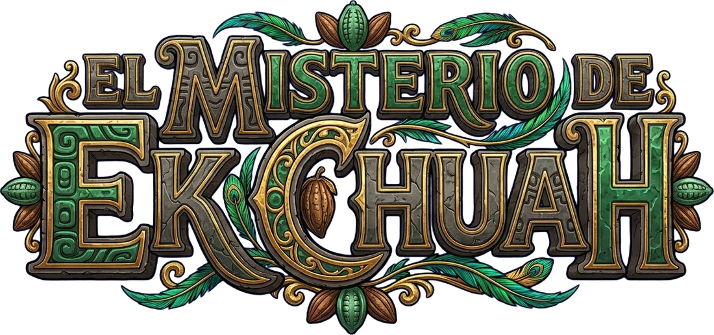

0

Elige a tu guía explorador
¡No te rindas, explorador!
La luz de Ek Chuah recarga tus antorchas para intentarlo de nuevo.
¡EXPEDICIÓN COMPLETADA!
- PUNTOS
- 0
- ANTORCHAS
- 3
- Ruta
- —

La luz de Ek Chuah recarga tus antorchas para intentarlo de nuevo.